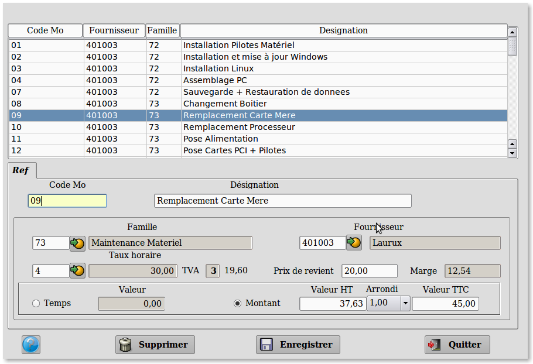

~ Comptabilité et Facturation Laurux ~

~ Comptabilité et Facturation Laurux ~ |
|
|
|

A partir de cet écran vous pouvez céer, modifier
ou supprimer une fiche Mo.
Pour rechercher une fiche afin de la visualiser, de
la modifier ou bien de la supprimer, vous pouvez cliquer sur chaque
titre des différentes colonnes pour effectuer un tri ,
ainsi, si
vous cliquez sur " Code " les
fiches seront triées par le code de la main d'oeuvre, si vous
cliquez sur " Designation
" les fiches seront triées par leur intitulé etc... Il
suffit alors de saisir les premiers caracteres de la recherche.
Vous pouvez donc retrouver une fiche en
l'appelant par son code, son intitulé, son fournisseur, sa
famille.
Pour créer une nouvelle fiche Mo, cliquez sur le bouton "Enregistrer" pour remettre toutes zones
à blanc, puis allez sur la zone "Code
Mo".
Le code Mo se saisit sur
15 caractères maxi.
La désignation se
saisit sur 30 caractères maxi.
Saisir le code famille ou
cliquer sur le bouton pour la récuperer.
Le code Tva de la Mo
est determiné par celui de la famille. Il n'est
donc pas modifiable.
Saisir le code comptable du fournisseur ou cliquer sur le bouton pour le récuperer.
Saisir le un code taux horaire ou cliquer sur le bouton pour le récuperer. Le taux à cet endroit n'est pas modifiable puisqu'il est issu de la table des taux horaires.
Saisir le Prix de revient .
Le prix de revient de la main d'oeuvre représente la moyenne de
l'ensemble des charges inhérentes à la MO concernée. Par exemple les
charges salariales, l'amortissement du matériel, l'éléctricité etc...
Le prix de revient va servir au calcul de la marge de la MO.
Si aucun prix de revient n'a été saisi dans la fiche sélectionnée alors
c'est le prix de revient saisi dans la fiche du taux de MO qui
s'affichera automatiquement. On pourra bien sur modifier ce montant
moyen proposé par le programme.
Completer la zone Temps/Montant.
Cette zone va determiner le mode calcul de la Mo lors de la
facturation. Si vous devez facturer un nombre d'heure multiplié
par un montant horaire alors cochez le bouton "Temps"
à l'inverse, si vous devez facturer un montant seul ( cas d'une
Mo forfaitaire ) cochez le bouton "Montant" puis saisissez le montant HT ou TTC de l'opération et son code arrondi.
----------------------------------------------------------------------------------------------------------------------